Plug-in Elements for Urban Furniture — a study of how public space
writes the rhythms we live inside, and an attempt to alter one of
them from within.
INSTITUTION
Bauhaus-Universität Weimar Faculty of Architecture
PROGRAMME
International Media Architecture Master (IMAMs)
SUBMITTED
Summer semester 2026 Weimar, 31.08.2026
EXAMINERS
Prof. Dr. Frank Eckardt Prof. Mark Shepard Dipl. Medienkünstler Hannes Waldschütz
01 Abstract
This thesis investigates how public spaces act as sites of ideological
control, operating as mechanical apparatuses that produce "desired citizens"
through standardised, affirmative design languages. It argues that
contemporary urban design and architecture reinforce systemic order by
replacing genuine spatial creation with formulaic, pre-approved frameworks.
To counter this condition, the research proposes psycho-rhythmic
analysis: a theoretical framework that positions play not as ornament
but as an anthropological language, and as a spatial countermeasure capable of
injecting chaos, encounter and opportunity into otherwise curated environments.
The investigation examines the structural role of play across three distinct
media — Jacques Tati's film Mon Oncle, the work of the Section d'Or
group in painting, and Constant Nieuwenhuys's architectural vision of
New Babylon, read alongside Cedric Price's Fun Palace. To test
the theory in practice, a prototype was developed consisting of plug-in
extensions for public benches — an everyday, non-curated urban element.
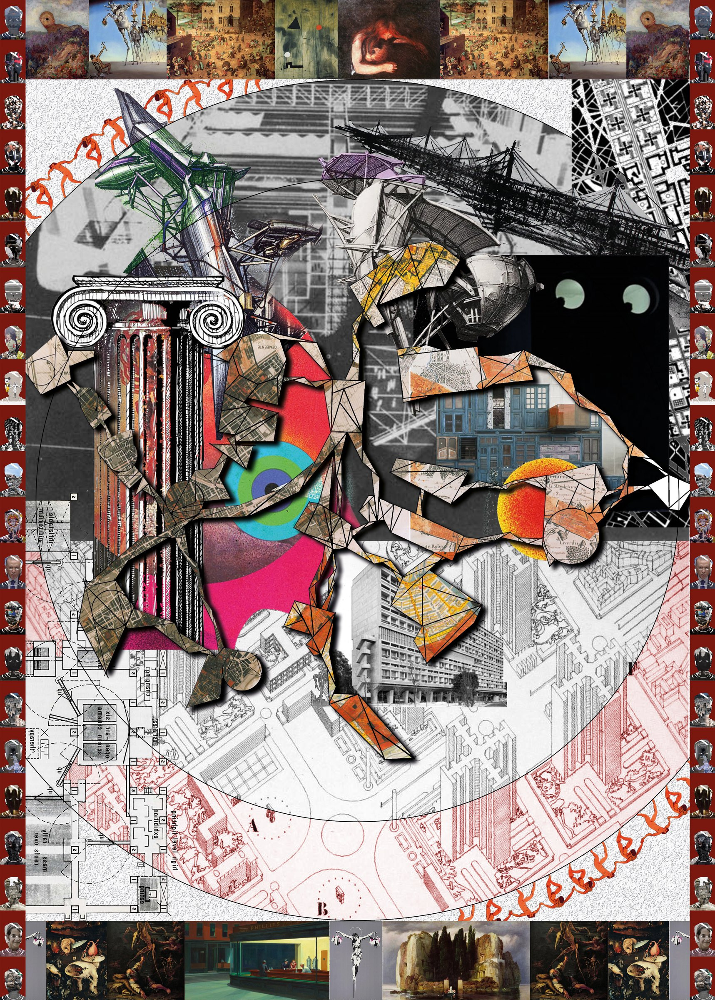
Psycho-Rhythmic Collage. The image is organized in depth: constitution at the border, imposition at the inner line, refusal at the center.
02 Research Questions
How can existing public spaces be hacked and transformed into sites of
encounter and opportunity, rather than remaining spaces of numbing comfort
that produce desired citizens?
And how can the phenomenon of play be used — not as a decorative element, but
as a linguistic design approach — to create uncurated spaces that leave room for
chaos rather than order?
What is the nature of play, and how does it function within the framework of linguistics?
In what ways does public space operate as a site of production rather than as a shared public realm?
In what ways are architectural elements toys?
What is psycho-rhythmic analysis?
03 Space as Apparatus
Public space has never truly belonged to the collective. It functions instead
as an instrument for the specific ideologies and interests of dominant
authorities — governmental structures, lobbyists, private corporations, and
equally political and religious movements exercising comparable influence over
civil life. This power is exercised through legislative shifts or pseudo-legal
frameworks that reconfigure civic architecture, societal norms, and the very
essence of daily routine.
Public space operates as a site of social production. It functions much like a
factory, in which the elements of our environment — the spatial language, the
defined functions, the tangible thresholds — orchestrate the rhythms of daily
life. These rhythms crystallise into habits, and habits solidify into culture,
which then provides a self-justifying framework for the status quo.
Within this context, the architectural and urban design professions have
increasingly abandoned genuine creation in favour of deploying memorised
approaches. By designing through pre-approved, formulaic guidelines, architects
do not merely build; they reinforce systemic order. Consequently, even
interventions such as public art or installations are reduced to bread crumbs —
superficial apparatuses against alienation that pacify the public while obscuring
the deeper, mechanical control inherent in the design language itself.
04 Method
The research is grounded in an anthropological reading of play, developed
through close engagement with the work of two contemporary new-media
practitioners. Both demonstrate how simple, low-threshold interactions can
generate entire situations of discovery, and this observation forms the
conceptual starting point of the thesis.
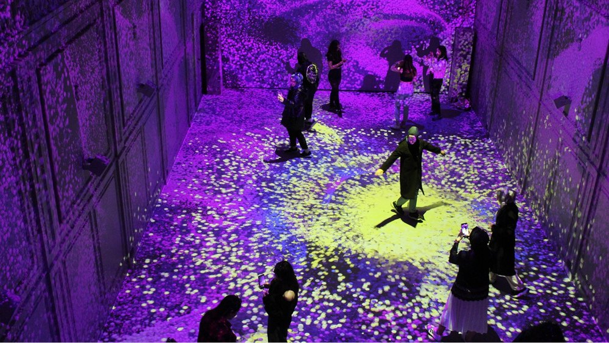
Refik Anadol, Alkazar Rüyası, 2021. Particle simulations responding to the velocity of people's movement. Source: Aynen Dergi
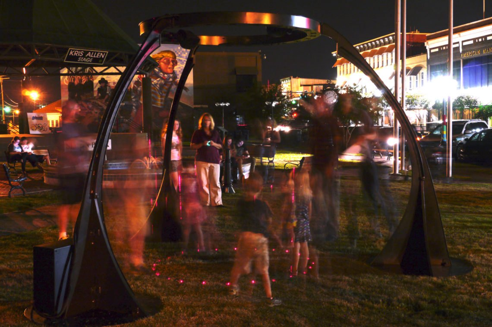
Jen Lewin, Chandelier Harp, 2012. Low-voltage lasers projected from a suspended chandelier; crossing a beam produces a musical note.
In Anadol's installation, particles reacted quickly or slowly according to
physical laws, much like kicking snow across the ground. Having witnessed the
work firsthand, I observed how it drew out spontaneous, childhood-rooted play:
people made snow angels, staged impromptu games of football, or tried to trigger
the largest possible particle explosion. What became clear was a two-step
process — people first had to understand the space and how it responded to them,
and only then did they begin to discover it through play.
Lewin's practice offers a more analogue counterpart. Installed in public
outdoor settings, where people move through daily life largely on autopilot, an
accidental trigger interrupts that subconscious state and shifts them into a
heightened awareness of their surroundings — which is itself a trigger for
further discovery.
Taken together, these works suggest that play is not merely leisure but an
anthropological mode of communication, comparable to language itself. Seen
through this lens, media installations in public space function simultaneously as
toys and as architectural elements.
05 Case Studies
Three works from three different media were chosen to demonstrate how the idea
of play is a core element within each medium, and how each medium is in turn
interconnected through the idea of linguistics.
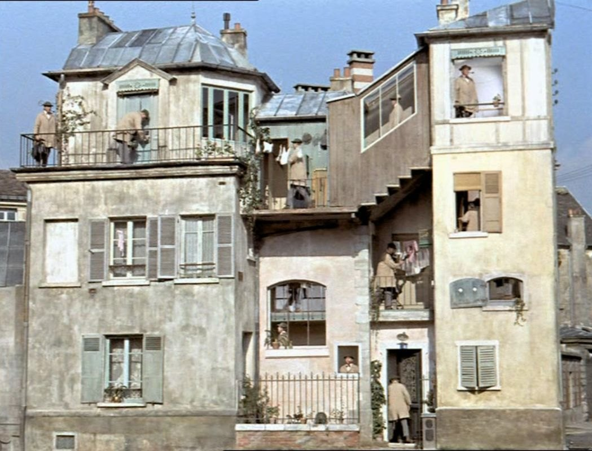
Mon Oncle
Jacques Tati · 1958 · Film
A critique not only of modern architecture but of the very idea of
modernity. It mocks that ideology by locating its critique within the
space itself, rather than confining it to situations or dialogue.
For this reason it is used here to discuss space both as apparatus and as
media — the Villa Arpel's choreographed geometry set against the
ramshackle, illegible accretion of Mr. Hulot's house.
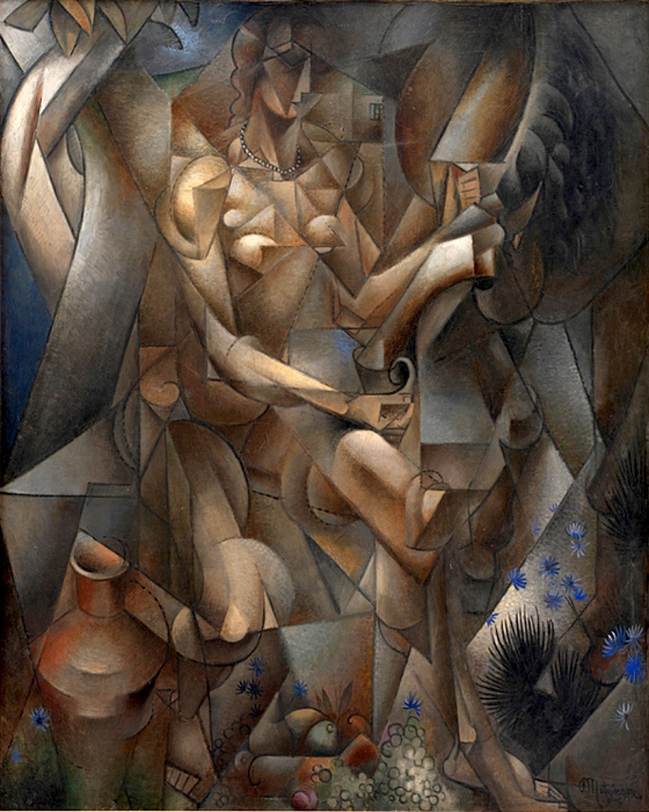
Section d'Or
Cubism & Orphism · 1912 · Painting
The group brought Cubism together with Orphism, which retained
Cubism's fragmented, multi-angle structure while prioritising colour and
light, drawing that heightened colour from Fauvism — fauve,
"wild beast." The palette is deliberately vicious, chosen to convey
emotion rather than depict reality. Holding both tendencies together
produces two layers of narrative: the subject the artist shares, and a
meta-layer in which the style itself becomes a dialogue between structure
and chaos.
New Babylon approaches play through polyrhythm — the simultaneous
layering of different, seemingly chaotic rhythms — generating encounter
by creating elements rather than staging situations. Read alongside
Price's Fun Palace, both are examined critically: each identified
alienation correctly and turned to play as its remedy, yet both treated
play as an event to be staged rather than as a psychological
rhythm. In doing so, each proposed a new circle inside the existing one
rather than interpreting the circle already in place.
06 Psycho-Rhythmic Analysis
Architecture is the toy of the magic circle we call civilization: it
represents ideas and determines the actions available within the game, curating
our movement and, through that curation, building our habits. Lefebvre argues in
Rhythmanalysis that the actions of daily life determine the rhythm of
that life. What I propose to add is this: the daily language with which we
continually interact in our surroundings determines not only our rhythms but our
habits, our behaviour, and ultimately our personalities.
When we walk, the pathways have already been defined for us. When we buy a cup
of coffee, the places where we may sit have already been decided. When we cycle
or run, the routes are laid out in advance. None of these definitions is a
problem in itself. The difficulty is that when everything in our lives has
already been defined and labelled, the result is a lack of event — and
redundancy produces monotony.
There are, however, structures that interrupt this. Each produces a different
rhythmic effect because each is unorthodox relative to the architectural
language surrounding it. The crucial point is that this effect is not confined to
the people who use these buildings; it reaches the ordinary passer-by who merely
shares the path. A building that interrupts the language of the street interrupts
it for everyone who passes, including those who never chose to encounter it. It
does not ask for participation. It changes the rhythm of a route people were
already walking.
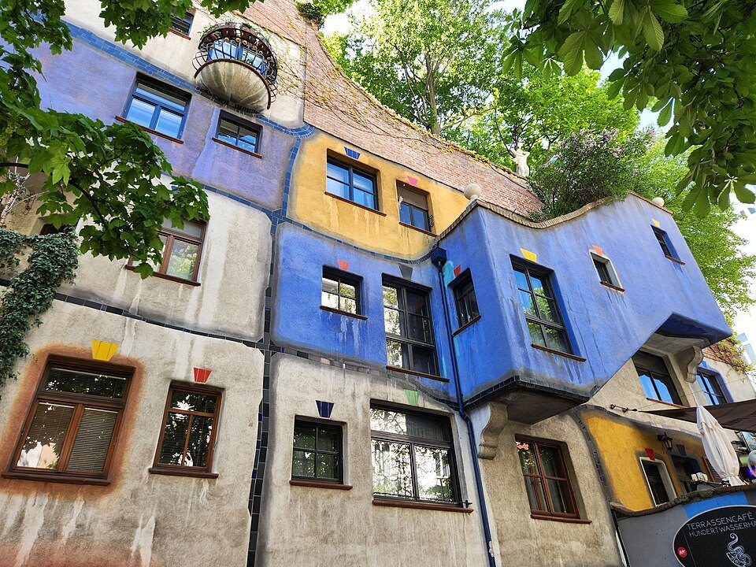
Hundertwasserhaus, Vienna, designed by Friedensreich Hundertwasser with Josef Krawina and Peter Pelikan, 1983–1985.
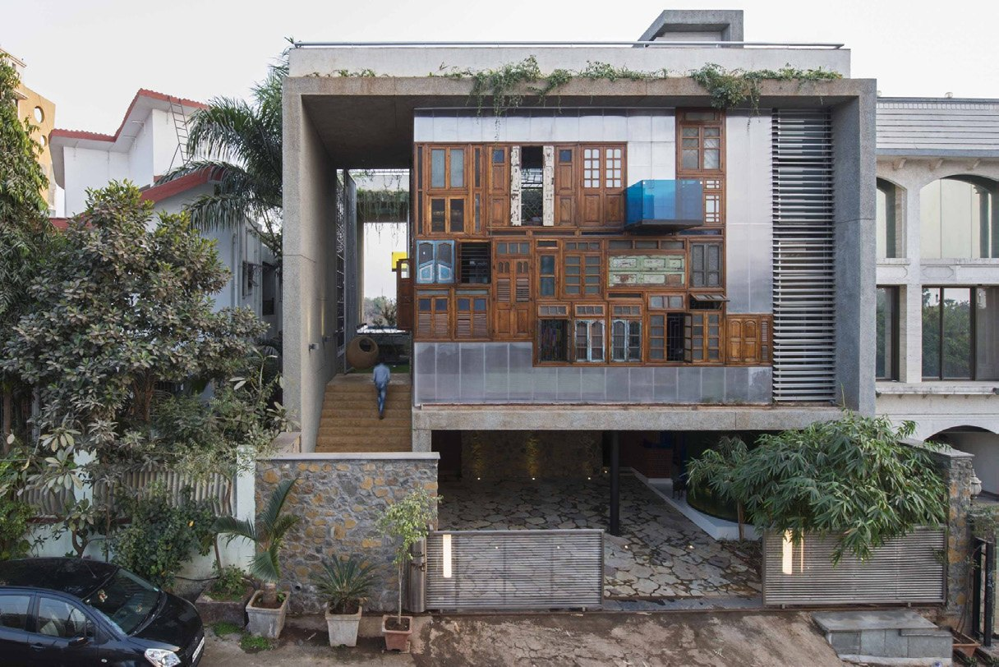
Collage House, S+PS Architects, Navi Mumbai, 2015. A facade assembled from doors, windows and columns salvaged from demolished buildings.
This is what psycho-rhythmic analysis means: an account of how architectural
elements exert rhythmic effects on our emotional and psychological health, and of
how those effects accumulate into habit, behaviour, and persona. Rather than
proposing a new circle in which play might take place, the aim is to work on the
toys the existing circle already contains, and to alter — one element at a time —
the rhythm those toys currently write.
07 The Plug-In Bench
If the elements of public space and their design language function as the
guideline for our actions, then the most direct way to test the theory is to work
on the public furniture that already exists, and to ask how it might be adjusted,
or hacked. The reasoning draws on two arguments from Don Norman's
The Design of Everyday Things: the distinction between conscious and
subconscious action, and what Norman calls opportunistic action.
The alteration has to be sufficient to catch attention and provoke curiosity,
and no more than that — there is a fine line between triggering curiosity and
producing unease. If the alteration is aggressive, the object is converted into
an installation to be regarded rather than a piece of furniture to be used. The
proposal therefore has to be radical enough to shift participants into active
engagement, and familiar enough that no one hesitates before touching it.
Site and Object
The test site was the open area behind the main building of the
Bauhaus-Universität Weimar, in front of the Atelier. Three benches stand there,
all of the same common municipal type: weathered timber slats on a galvanised
steel frame, 120 cm long and 45 cm high, of which the timber accounts for 5 cm.
The ordinariness of this object is not incidental to the choice; it is the
reason for it. If the aim is to test whether an existing element of public space
can be altered enough to shift a person from passive to active participation,
then the correct test case is not an interesting object but an invisible one. A
bench that already attracted attention would prove nothing.
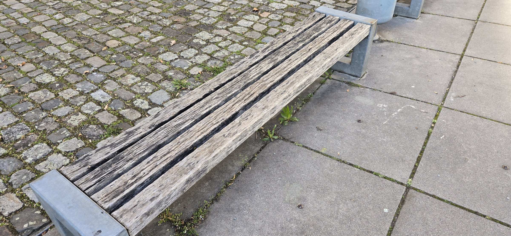
Selected site and bench, behind the Bauhaus-Universität Weimar main building.
The Modular Grammar
The dimensions of the bench determined the dimensions of everything that
followed. With the timber accounting for 5 cm of the 45 cm total, the underside
of the seat sits at 40 cm, and this figure became the governing unit of the
entire system. Rather than beginning with a form and adapting it to the site, the
site set the module.
The proposal required a language of parts rather than a single designed
object. This led to the adoption of a tetris language: a family
of modules whose plan geometry is derived from tetromino shapes, so that pieces
of different form share a common 40 × 40 cm grid and can be combined in a large
number of configurations. Any module, in any orientation, meets the bench at its
own height. It is the drawing of this vocabulary, rather than any individual
module, that constitutes the design proposal — the parts are not a set of objects
but a system for producing arrangements.
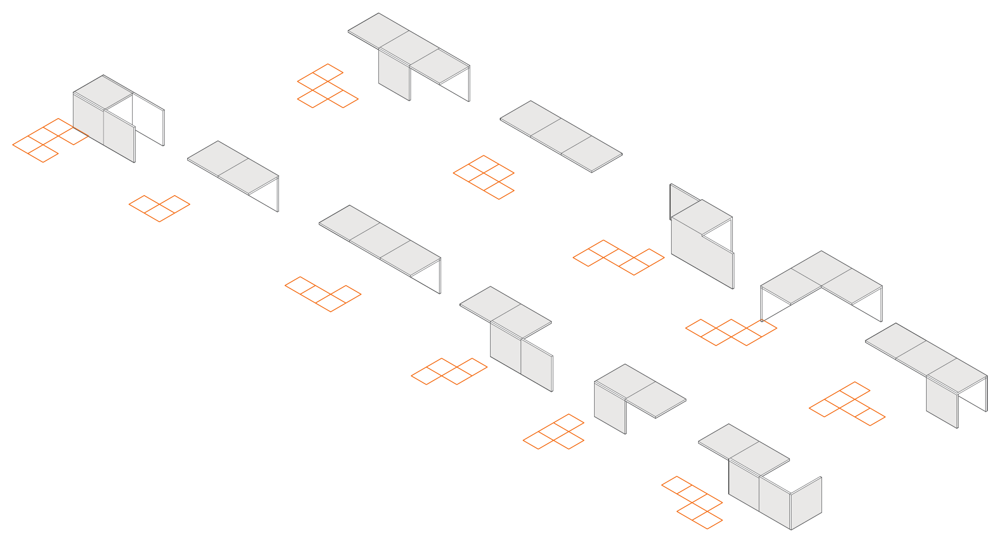
Module vocabulary: each module drawn in axonometric alongside its tetromino footprint.
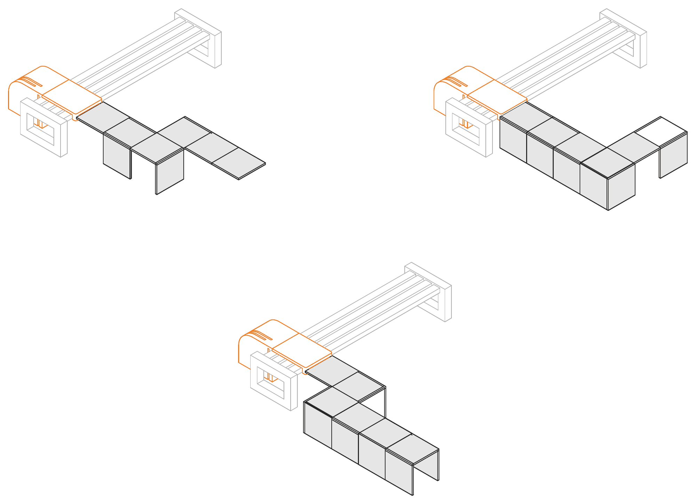
Different variations produced from the same set of parts.
Connection and Movement
The first attempt at connection used a rail routed directly into the 16 mm
MDF. It failed: the material remaining either side of the channel was too thin,
and the fibre gave way under load. The failure was in the material rather than
the principle, and the principle was worth keeping, since a sliding connection is
one a person can operate without instruction.
The solution was to move the joint onto the board's edge — routing away half
the depth, 8 mm of the 16 mm, to produce an L-shaped rebate. The adjoining piece
carries the matching rebate, so the two step into one another and close flush.
The rebate is itself the rail. A module brought up against its
neighbour follows the L-profile down into position and can only seat one way; the
geometry does the locating, so a person assembling the piece does not need to
know how it goes together in order to put it together correctly.
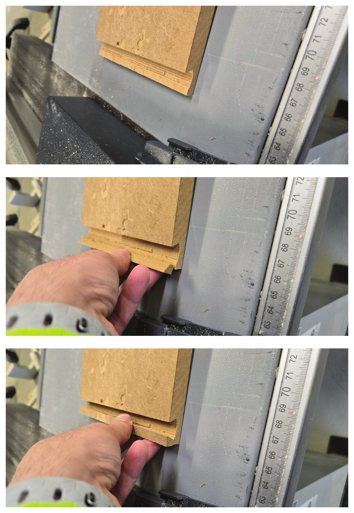
The first attempt: MDF tearing along the wall of the routed channel.
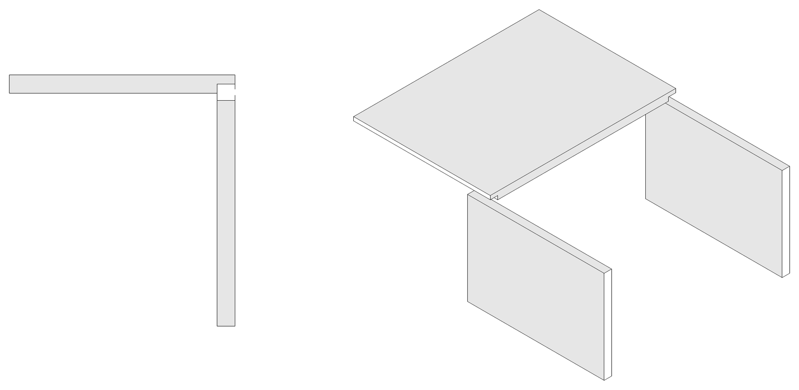
The L-shaped rebate for railing and fixing: the joint that replaced the failed channel.
The relationship to the bench itself is the point at which the proposal is at
its most direct. The large curved module runs on wheels, which allow it to slide
along the length of the bench and be set wherever the user chooses. Nothing is
fixed to the bench, nothing is removed from it, and no tool is required. The
existing element is neither replaced nor damaged, and yet its configuration —
and with it the arrangement of bodies it produces — is now determined by the
person using it rather than by whoever specified it.
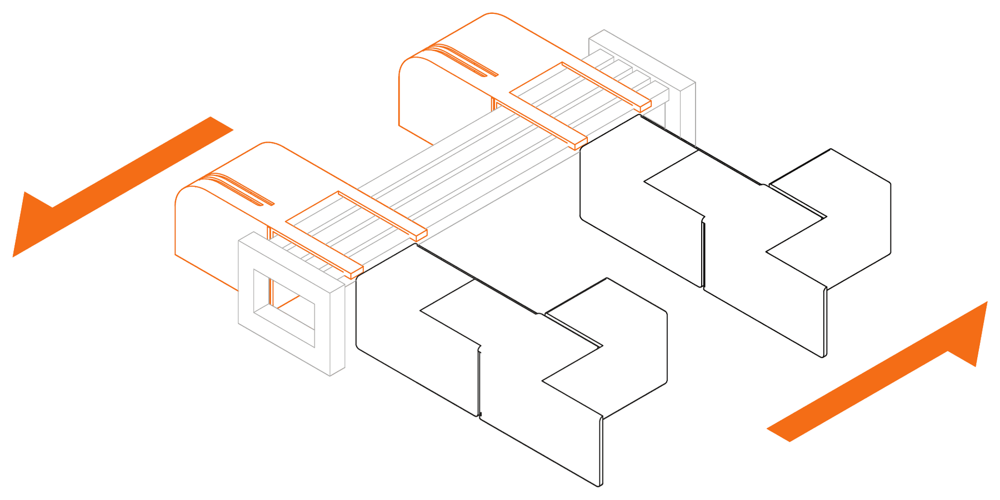
Movement sequence. The curved module runs on wheels and can be set anywhere along the bench.
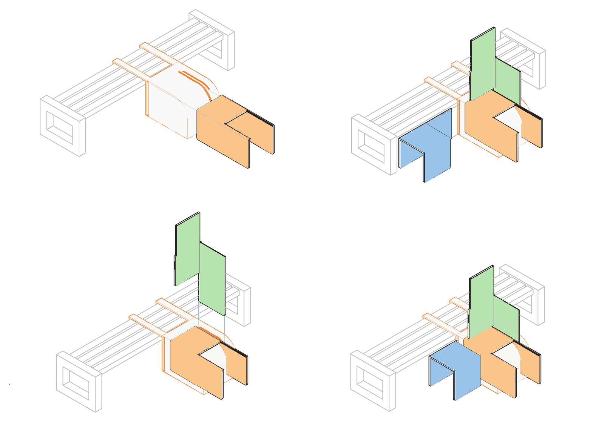
Storage sequence. The modules nest into one another and against the bench when not in use.
Fabrication
The modules were built from 16 mm MDF, cut into 40 × 40 cm and 80 × 40 cm
panels. Into each panel a slot was cut to serve as a hand hold. These openings
perform two functions at once: they allow a module to be lifted and carried by one
person, and they announce, before anything else about the object is understood,
that the object is meant to be picked up. A fixed piece of street furniture
has no handles. An element that does is already saying something about
itself.
The largest component is the curved module that seats three tetris pieces,
formed by kerf bending. The first attempt failed — the kerfed section was cut
short of the span required — and the second, made at the correct length, worked
without difficulty. The difference between them is not a difference of method but
of measurement, which is the more common way that a fabrication step fails.
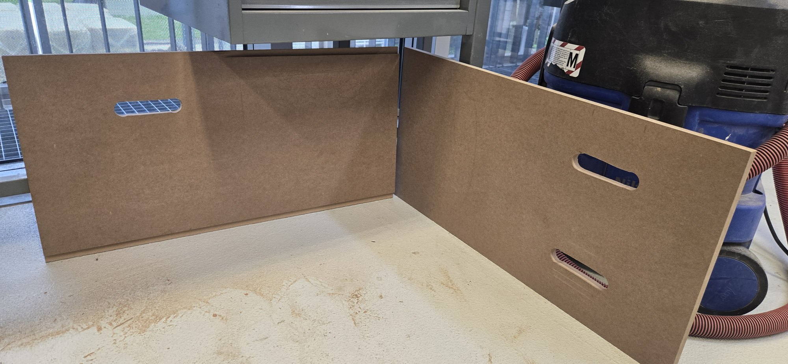
80 × 40 cm MDF panels with hand holds cut into each face.
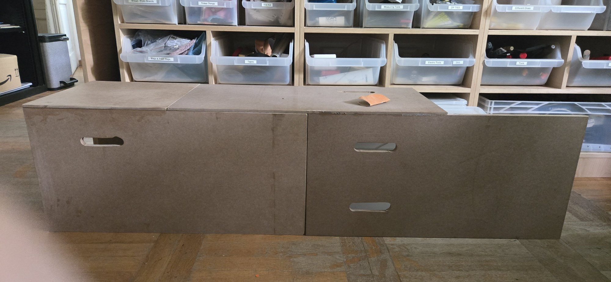
Two constructed modules joined together by the railing.
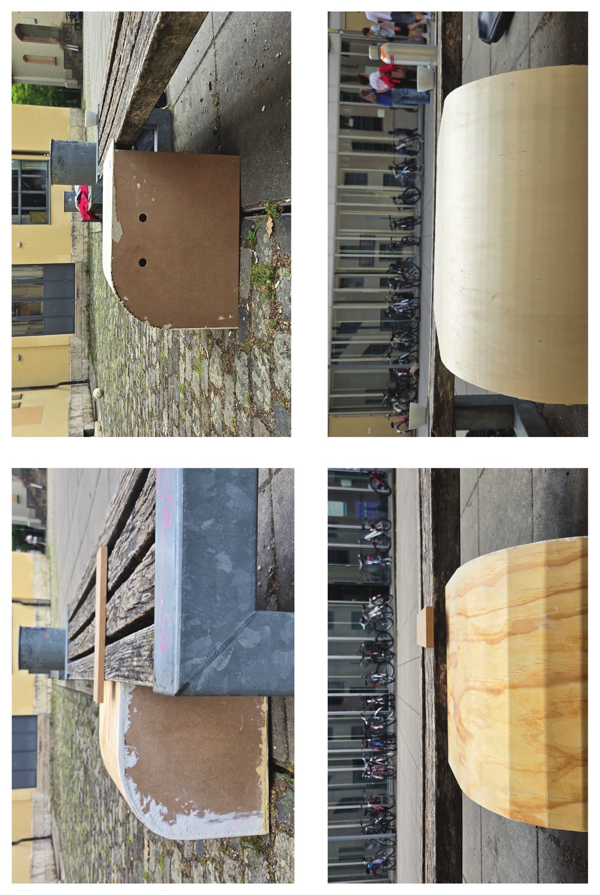
(Left) failed curved module, (right) remade module. Kerf bending at the correct span.
Electronics and Interaction
Each module carries its own power supply and its own behaviour. Nothing is
wired between modules and nothing is connected to mains power — a requirement of
the proposal rather than a convenience: a plug-in element that depends on a fixed
power source is no longer something a person can pick up and put down where they
choose.
Power comes from two 18650 lithium cells feeding a purpose-built board with a
voltage regulator and charging module, delivering a regulated 5 V. Of the three
modules built, two were configured for sound and one for light.
The switching logic is the part of the electronic system that carries the most
meaning. I did not want the modules to run continuously; I wanted them to turn on
at the moment of connection, so that the user receives a reaction to
something they have just done. Each module holds a magnet and a Hall effect
sensor, and powers on only when its sensor detects the magnet of an adjoining
piece. There is no switch, no button and no timer.
A module standing alone does nothing at all. Only when two pieces are brought
together does either begin to behave — the electronic response is not a
reward for approaching the object but a reward for configuring it.
TECHNICAL SUMMARY
Grid unit
40 × 40 cm, set by the bench's 40 cm underside height
Material
16 mm MDF; kerf-bent plywood for the curved module
Joint
8 mm L-shaped rebate, half-lap; M5 bolts and L-brackets for fixing
Guides
3D printed in Carbon Fiber PETG and ABS for sun resistance
Power
2 × 18650 Li-ion per module, regulated to 5 V; no mains, no inter-module wiring
Control
Arduino + Hall effect sensor and magnet; powers on only on connection
Output
2 × sound (DFPlayer Mini + amplifier), 1 × light (addressable LED strip)
Finish
Two coats 2-in-1 primer-and-topcoat lacquer, white, then colour and graphics
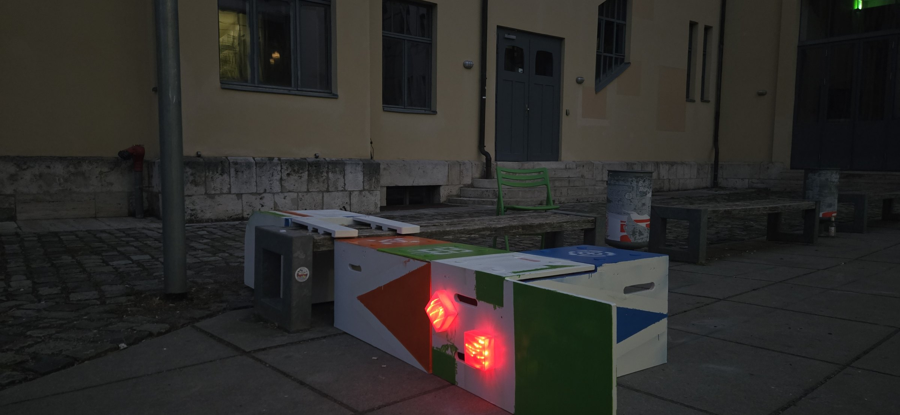
The modules illuminated on site after dark.
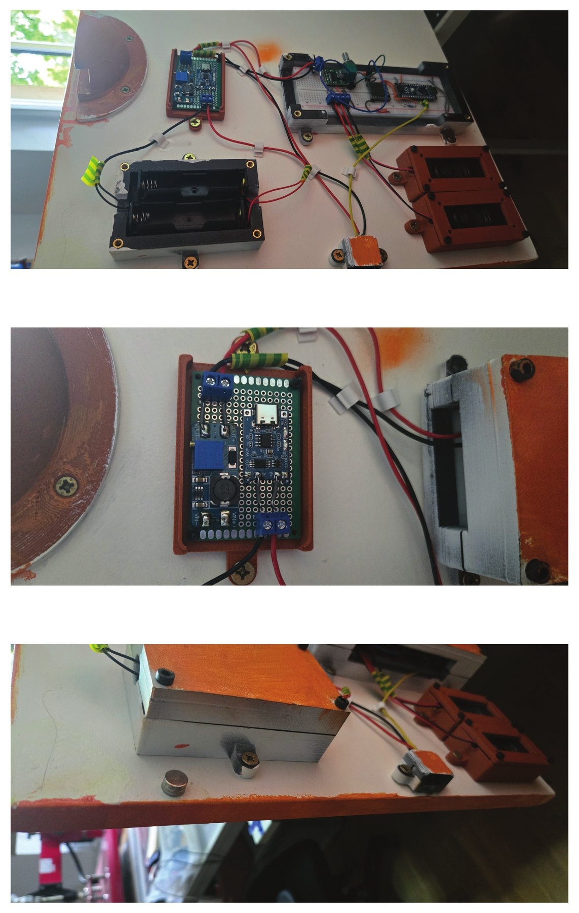
(Left) Hall effect sensor and magnet, (middle) voltage regulator module, (right) the whole electronic assembly for the first module.
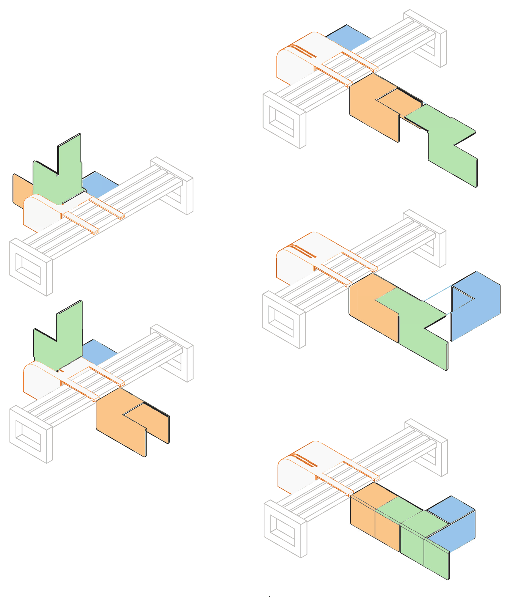
The assembly sequence. Every intermediate state is itself a usable arrangement rather than an unfinished one — there is no privileged final form and no correct number of pieces.
08 Deployment & Findings
The structure was tested during summaery2026, the annual
exhibition of the Bauhaus-Universität Weimar. The observations recorded are
informal: no formal protocol was used, no participants were recruited, and
nothing was measured. Arrows were painted onto the module faces and insertion
points picked out in colour, but no written instructions, diagram or tutorial
accompanied the structure on site.
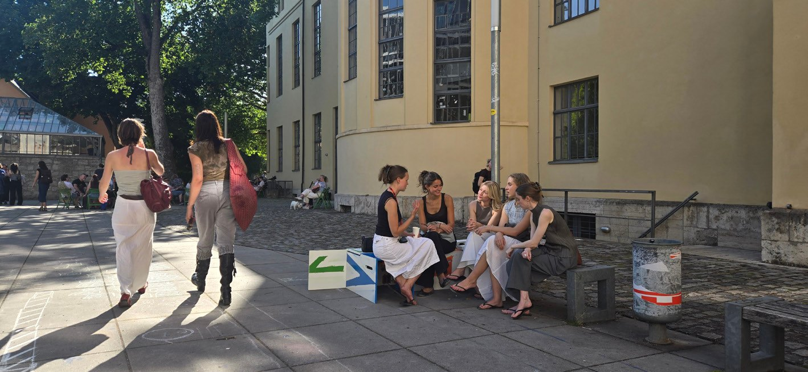
The structure in use during summaery2026. Modules set at an angle to the bench brought people to face one another rather than outward in a row.
01
The location worked. Nobody travelled to the Plug-In Bench. It stood on a route people were already walking, and those who encountered it did so in the course of doing something else — the distinction this thesis drew between itself and the Fun Palace held in practice.
02
The seating arrangement changed. Because the modules met the bench at an angle, people faced one another instead of facing outward. Several described the effect, unprompted, as a conversation pit, and said they had enjoyed sitting that way.
03
Children and adults behaved differently. Children approached without hesitation, entered the tunnel beneath the modules, climbed on it and played around it. Adults looked, waited, and in many cases asked whether they were allowed.
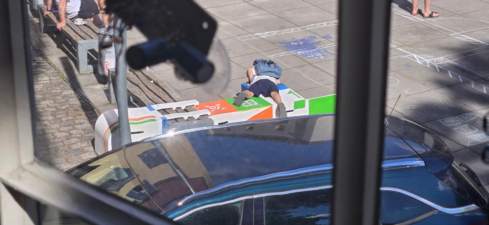
Curious children at the structure, summaery2026. The children had not yet learned that an unfamiliar object in public space requires permission before it can be touched. The adults had.
Two results count as failures
Some visitors read the structure as an artwork and treated it as something to
be looked at rather than used. This is exactly the failure mode predicted in the
design principle set out earlier: an alteration which is too assertive converts
the object into an installation to be regarded. Having named that risk in
advance, it would be dishonest not to record that it occurred. A related and
smaller version of the same problem is that several people did not sit down
because the paint looked wet — surface finish operates as a signifier
independently of anything the graphics say.
The second failure is more significant, because it concerns the central claim.
Over the entire exhibition, nobody attempted to assemble, disassemble or
reconfigure the structure. The modularity that the whole system exists
to provide was never exercised by a user. The reason is not mysterious: when
asked, people said they had not known reconfiguration was possible, and nothing
had told them so. This is precisely Norman's distinction between an affordance
and a signifier. The structure afforded reconfiguration; what it lacked
was anything telling a person they were permitted to do so. The claim was not
disproven by the test — it was not tested.
09 Conclusion
The answer this thesis developed is that both questions run through rhythm.
Public space produces citizens not by instructing them but by writing the rhythms
they live inside, and any intervention that hopes to return agency to those
citizens has to work at that level rather than at the level of the event.
What the prototype established is that the site, the scenario and the
instrument were correctly chosen. The bench was the right object: ordinary enough
to be invisible, public enough to be shared, and small enough to be altered by one
person without permission. The aim of producing a seating arrangement rather than
an attraction was the right aim, and it worked.
The clearest evidence for the underlying hypothesis came from the children.
They approached without hesitation and produced exactly the unplanned, uncurated
interaction the whole proposal exists to generate. That is not a small result: it
demonstrates that the object was capable of producing what it was designed to
produce, and that the obstacle lay elsewhere.
The obstacle lay in the design. The structure is technologically simple and
its interaction narrow. More seriously, the piece contains real errors of use. In
attempting to signal that the object was interactive, I used more colour and more
graphic marking than the object needed, and the result may have pushed it across
the line I identified in advance. The failure mode was one I had named before
building, and I built it anyway.
What the work produced is a direction with evidence pointing along it, not a
demonstration.
Two constraints stand between this proposal and any real deployment, and they
should be stated plainly because this thesis did not solve them. An object placed
in public space without supervision is subject to theft and damage. And MDF,
batteries and printed plastic are appropriate to a prototype and inappropriate to
street furniture expected to survive weather and years of use. Any serious version
would have to begin from materials and a maintenance model rather than from form.
What this thesis contributes, then, is not a finished object but a way of
reading. Psycho-rhythmic analysis proposes that the elements of public space act
on us through rhythm rather than through instruction, that those rhythms build
habits and personas beneath the level of conscious choice, and that an
intervention wishing to interrupt them must work inside the rhythm that already
exists rather than constructing an alternative beside it. The Plug-In Bench is an
argument for that proposition made in material rather than in text — an
incomplete argument, but one whose failures are as informative as its successes.
KEY REFERENCES
Norman, Don. The Design of Everyday Things. Rev. and exp. ed. New York: Basic Books, 2013.
Lefebvre, Henri. Rhythmanalysis: Space, Time and Everyday Life.
Huizinga, Johan. Homo Ludens: A Study of the Play-Element in Culture.
Carse, James P. Finite and Infinite Games.
Habermas, Jürgen. The Structural Transformation of the Public Sphere.